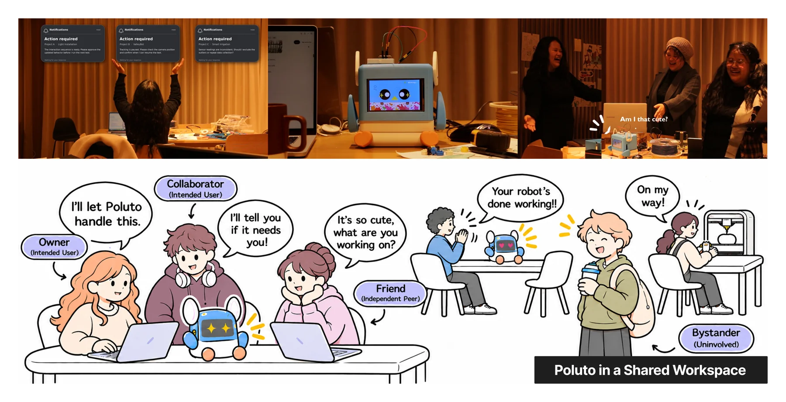
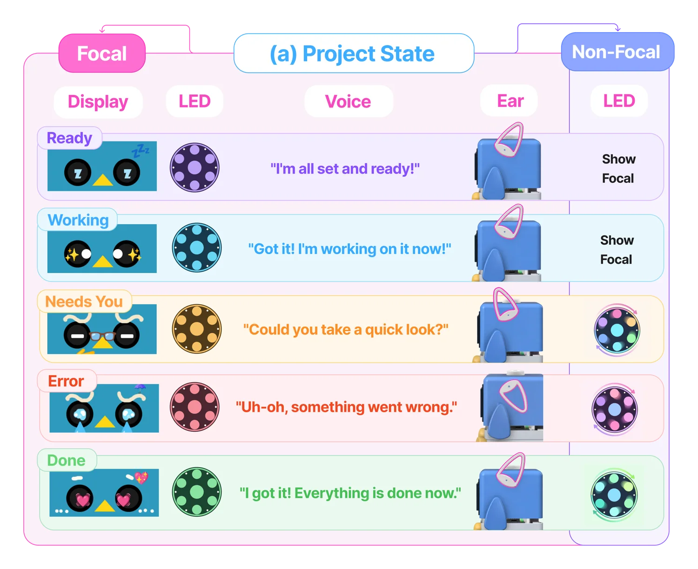
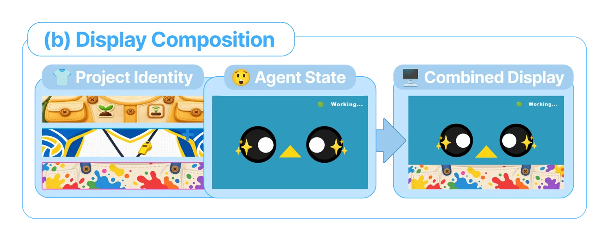
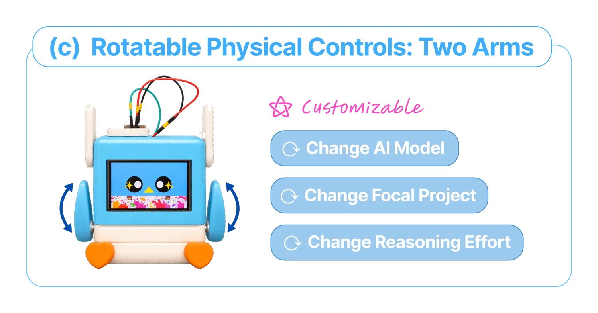
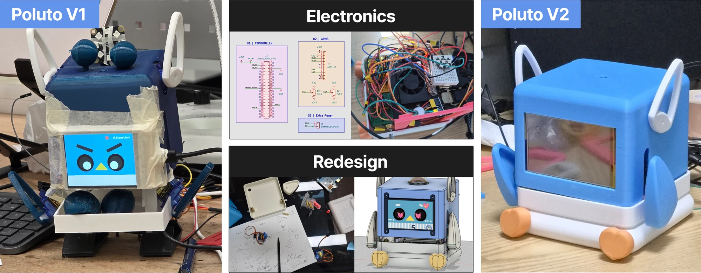
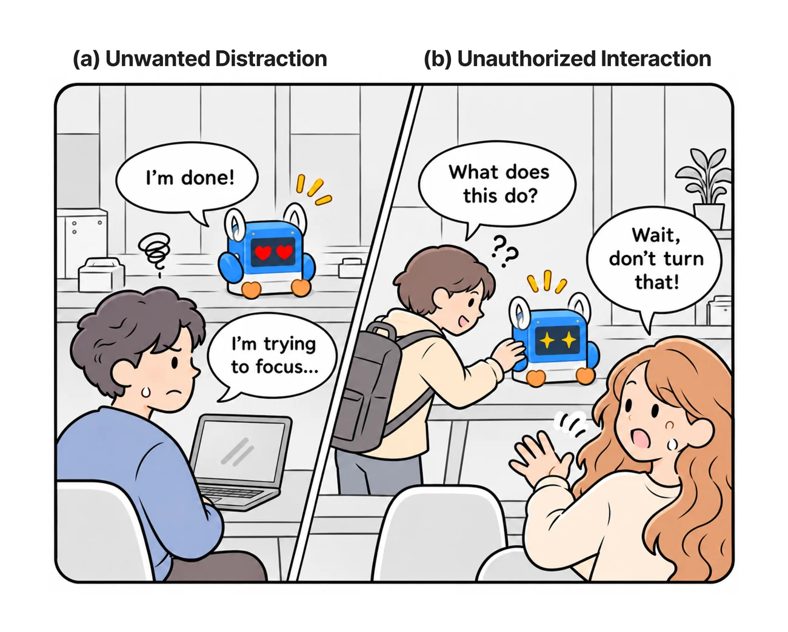

POLUTO / Research
Poluto: An AI Work Companion Robot for Shared Workspaces
AI agents can keep working while people turn to other tasks. Poluto gives that ongoing work a physical presence, so changes that need attention can be noticed beyond the screen.

Abstract
When people delegate several tasks to AI agents, they still need to notice when a project needs attention, even while away from the screen. Poluto gives ongoing AI activity a physical presence. Clothing-like visual identities distinguish projects; facial expressions, ear gestures, light, and voice communicate activity states; and rotating arms offer physical controls.
In a shared workspace, those cues are also perceptible to collaborators, peers, and bystanders. The paper examines how to balance awareness and interruption, project recognition and information disclosure, and access to controls and permission to use them. It presents an interaction design, two prototyping stages, and a planned interactive demonstration. It does not report a user study.
Why a physical companion?
Imagine starting an AI task at a computer, then moving to a workbench while the agent continues. The work is still underway, but its status is now out of sight. Returning to the screen just to check for updates can interrupt what the person is doing.
Delegating work does not remove the need for human input. An agent may need clarification, encounter an error, or finish while its user is away from the computer. Poluto explores how a tabletop robot can make these moments perceptible in the workspace.
Because the workspace is shared, the same expression can be helpful to its user and visible or distracting to others nearby. This shapes both what Poluto communicates and how it does so. The paper's central question follows: how should we design robots whose purpose is to serve particular users, but whose presence is shared?
Making activity visible
Poluto represents an AI agent's activity through five states: Ready (waiting for a task), Working (executing a task), Needs You (requiring input or approval), Error (unable to continue), and Done (completed). The selected Focal Project appears on the display. A brief ear gesture and voice clip mark a state change, while the expression and ear posture continue to indicate the current state. Other projects remain in the background and can briefly signal attention through proposed LED patterns.

Which project? What is happening?
Clothing-like visuals distinguish projects without displaying their names or task details. A separate facial expression shows the agent's activity, so the project's identity can stay recognizable as its state changes. Detailed tasks, approvals, and results remain on the user's computer.

Physical controls in a shared space
Poluto's two rotating arms provide physical controls, including selection of the Focal Project. Possible functions also include AI model and reasoning effort selection. Someone nearby may be able to move an arm, but that does not mean they have permission to change the user's settings. The paper proposes locking controls while the user is away and confirming any change made while locked when they return. The confirmation interface remains to be designed and evaluated.

Designing for people nearby
Poluto's presence in a shared workspace brings three design questions together:
- Noticeability and interruption. How can a brief cue draw attention without repeatedly disturbing others?
- Recognition and disclosure. Can users recognize a project while revealing little about it to bystanders?
- Access and permission. How can physical controls remain convenient without allowing unwanted changes?
For noticeability, the design separates brief attention cues, such as ear movement and voice, from continuing state cues on the display and ears. For recognition, clothing-like project identities are separate from facial expressions, although observers may still infer a project's general subject. For permission, a person who can touch the robot is not automatically authorized to change settings. Whether these choices work for users and nearby people remains to be evaluated.
An evolving prototype
Poluto has developed through two prototypes. V1 combined a modified TJBot body [6] and flipper components from the Robotic Study Companion [2]. Its manually created expressions, lighting, and ear movement explored the concept but were not driven by a working AI agent.
V2 connects AI agent activity to display expressions, voice clips, and ear movements, and adds working rotating arms. The team removed V1's microphone and local language model to focus speech on communicating agent activity through pre-recorded clips, using Voice Design [4]. The body was redesigned for its components, character, and tabletop stability. LED behavior remained under development in the paper's account.

Demonstration and open questions
The paper describes a planned demonstration with a makerspace video and hands-on interaction. Visitors would select a project with an arm and experience controlled transitions through all five states. Scenarios ask when expressive feedback helps a user but interrupts someone nearby, and what happens when a bystander changes another person's controls.
At submission, the paper reported a completed physical prototype and demonstration video, reliable display, voice playback, and servo-driven ear movement, but intermittent LED output. It does not report findings from visitors.
Further study is needed to understand whether people notice and interpret the cues, what project identities reveal to others, and how safeguards can prevent unwanted changes while retaining convenient physical control.

Research poster
The companion poster brings together the motivation, design principles, interaction design, and prototype development on one page. Open the poster PDF (52 MB).
References
- Ruth Ablett et al. (2007). “BuildBot: Robotic Monitoring of Agile Software Development Teams.” RO-MAN, 931–936. DOI
- Farnaz Baksh, Matevž Borjan Zorec, and Karl Kruusamäe (2024). “Open-Source Robotic Study Companion with Multimodal Human–Robot Interaction to Improve the Learning Experience of University Students.” Applied Sciences 14(13), 5644. DOI
- Yi-Hung Chou et al. (2026). “Developers as Managers of AI Agents: A Workplace Shadowing Study.” arXiv:2610.33588
- ElevenLabs. “Voice Design.” Website
- Faria Huq et al. (2025). “CowPilot: A Framework for Autonomous and Human-Agent Collaborative Web Navigation.” NAACL System Demonstrations, 163–172. DOI
- IBM. “TJBot.” Website
- Hiroshi Ishii et al. (1998). “ambientROOM: Integrating Ambient Media with Architectural Space.” CHI 98 Conference Summary, 173–174. DOI
- Min Kyung Lee et al. (2012). “Ripple Effects of an Embedded Social Agent: A Field Study of a Social Robot in the Workplace.” CHI, 695–704. DOI
- Tao Long et al. (2026). “ParallelPilot: Supporting Coordination and Monitoring in Parallel AI Coding.” arXiv:2609.33113
- Miles McCain et al. (2026). “Measuring AI Agent Autonomy in Practice.” Anthropic technical report. Report